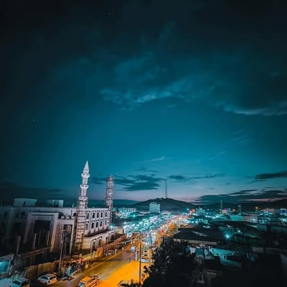

August 27, 2026
When the Money Stops: What Las'anod Is Proving While AUSSOM Funding Dries Up

The U.S. just confirmed it's ending funding for AUSSOM, the African Union force that's been propping up Somalia's security architecture, effective the end of this year. Nearly 12,000 AU troops and close to 21,000 Somali forces have depended on that money for fuel, transport, medical care, the basic plumbing of running a mission. The stated reason: Mogadishu hasn't taken real ownership of its own security.
I've sat in enough ministerial meetings to tell you this isn't a new story. It's the same pattern I saw across humanitarian coordination for two decades: international partners build the scaffolding, keep paying for it indefinitely, and "ownership" stays a line in a strategy document rather than something anyone is forced to practice.
Contrast that with how a nomadic Somali community handles security or dispute resolution. There's no external logistics chain to fall back on. Elders, clan structures, and mutual obligation carry the weight because they have to. Accountability isn't outsourced.
You can see the modern version of that same instinct in North East State right now. Las'anod is being rebuilt largely by its own people: residents, local business, and the diaspora, not by a reconstruction plan drafted in a donor capital. Word is Las Qoray is next in that same pattern. Nobody waited for an international consultant to write the framework first.
That, to me, is the real Somalia model worth talking about: communities investing in their own recovery because they have to, and because they choose to, not because a project cycle told them to.
I'm not cheering a funding cut that could leave real security gaps. But if pressure like this forces more of Somalia to build the way Las'anod is building, it might be the most useful thing to happen to Somali state-building in years.
What do you think? Does forced independence ever actually work, or does it just create a vacuum?